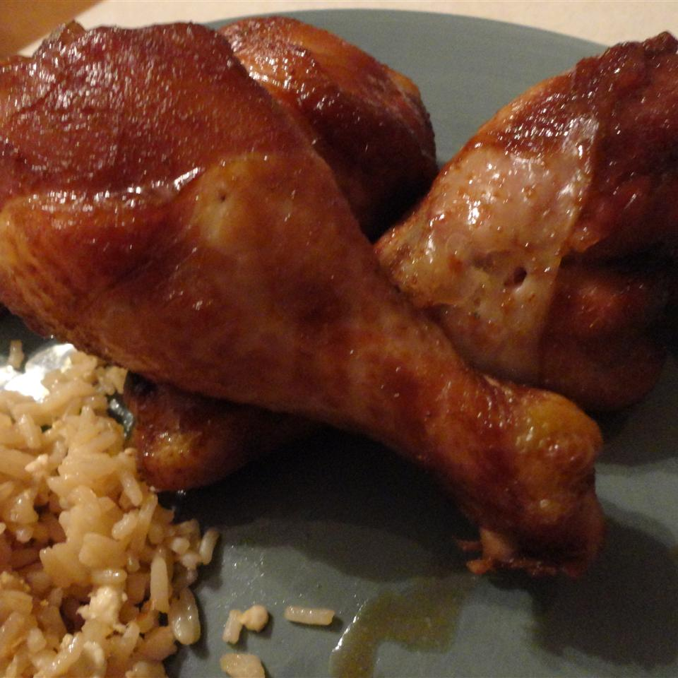

Teriyaki Chicken

Teriyaki chicken is a Japanese dish of grilled chicken brushed with a mixture of soy sauce, mirin, and sake. A very easy to make chicken and tasty too, with a nice flavor!
Ingredients
- 1 (3 pound) whole chicken, cut in half
- ¾ cup granulated sugar
- ¾ cup soy sauce
- 1 tablespoon grated fresh ginger
- 2 cloves garlic, minced
Steps
- Rinse chicken halves, and pat dry with paper towels. Place chicken cut side down in a 9x13 inch baking dish.
- In a medium mixing bowl, combine sugar, soy sauce, grated ginger and garlic. Mix well, and pour mixture over chicken. Cover and refrigerate for at least 3 hours.
- Preheat oven to 350 degrees F (175 degrees C).
- Bake chicken uncovered in the preheated oven for 1 hour, basting frequently. Test for doneness, making sure there is no pink left in the meat. Let cool slightly, then cut into smaller pieces to serve.
Nutrition Facts
Per Serving:
604 calories; protein 44.3g; carbohydrates 27.9g; fat 34.2g; cholesterol 170.3mg; sodium 1963mg.
Return to recipes